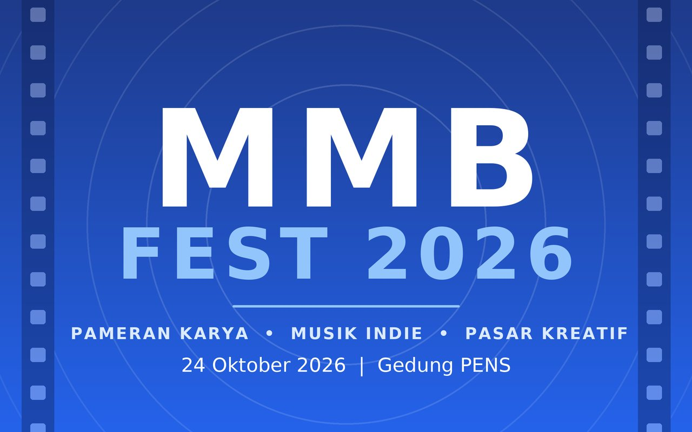
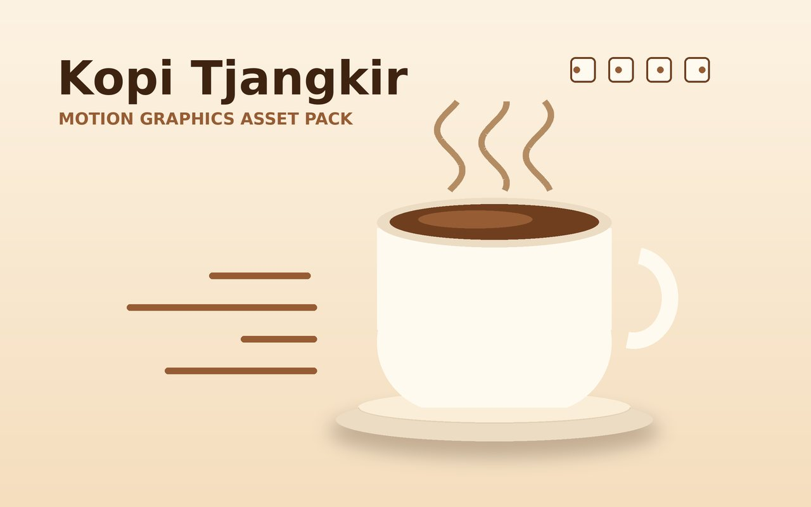

Brand Identity MMB FEST 2026
Supergraphics & pedoman visual identitas brand MMB FEST.
Platform info event & kreativitas mahasiswa Multimedia Broadcasting PENS
Lihat agenda, buka detail event, lalu daftar langsung dari satu halaman. Pendaftaran tersimpan di perangkat ini.

Sampel audio promosi event MMB FEST 2026
Audio belum bisa dimuat. Coba muat ulang halaman.
Supergraphics & pedoman visual identitas brand MMB FEST.

Katalog aset animasi promosional cafe dan spot kreatif.
Dikembangkan dari Tugas 4 menjadi Project Akhir Praktikum Pemrograman Visual (TB033109).